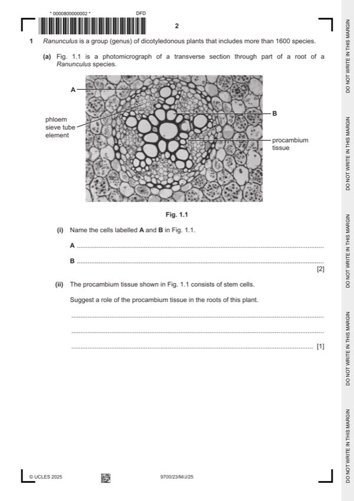

Question 1

Original paper page 2
Part 1(a)(i) — solution
- A = endodermal (cell) ; 2
- B = xylem vessel element ; A vessel elements
Mark points
- A = endodermal (cell) ; 2
- B = xylem vessel element ; A vessel elements
Part 1(a)(ii) — solution
(has cells that can) divide continuously by mitosis ; 1
idea that forms cells that can, differentiate / AW, into cells in, vascular tissue / xylem (tissue) / phloem (tissue) ;
(for) repair / growth, of, vascular tissue / xylem / phloem ;
divide to maintain pool of procambial cells ;
University Press & Assessment 2025 Page 8 of 17
9700/23 Cambridge International AS & A Level – Mark Scheme May/June 2025
Mark points
- Include the ideas shown in the solution above.
Part 1(b) — solution
mark as pairs (adaptation A + explanation E), max two pairs 4
A thick (waxy) cuticle ;
E increased / long, diffusion distance for water vapour or idea of (greater) impermeability to, water vapour ;
A needle-shaped / narrow / AW, leaves ;
E low surface area to volume ratio, qualified ; e.g. less transpiration / AW
allow ecf if adaptation is spines
A multilayered epidermis / hypodermis ;
E increased diffusion distance for water vapour ;
A low stomatal density ; A few(er) stomata (per unit area) A small(er) stomata
E less, transpiration / diffusion of water vapour out of the plant (because most water loss is via stomata) ; I evaporation
A sunken stomata ; A other examples e.g. stomata in, grooves / crypts / chambers
A trichomes / (stomatal) hairs;
A rolled / curled, leaves ;
for above three mps
E maintains humid air around stomata / reduced water potential gradient / (creates) still / non-moving, air ;
I concentration gradient
AVP ;; e.g. A midday closure of stomata
E close at times when transpiration is highest / AW
A close packing of mesophyll cells / fewer (intercellular) air spaces
E reduces evaporation from mesophyll
A stomata open at night
E lowers transpiration as, higher humidity / lower temperature
A lighter gray / pale coloured, leaves
E reflect light to keep temperature cooler
University Press & Assessment 2025 Page 9 of 17
9700/23 Cambridge International AS & A Level – Mark Scheme May/June 2025
Mark points
- Include the ideas shown in the solution above.
Part 1 — solution
binding / attachment / joining / AW, of cell fragment to, (phagocyte cell surface) receptors / (phagocyte) membrane ;
endocytosis / phagocytosis
Mark points
- Include the ideas shown in the solution above.
Part 1 — solution
prescribing / take, antibiotics only when (absolutely) necessary ;
A examples e.g. do not use for viral infections
do not use as preventative medicine
Mark points
- Include the ideas shown in the solution above.
Part 1 — solution
rate of reaction is lower at pH 4.5, throughout / at all substrate concentrations / AW ; ora
Mark points
- Include the ideas shown in the solution above.
Part 1 — solution
inject (non-self / foreign / specific) antigen into small mammal ;
A named e.g. mouse
Mark points
- Include the ideas shown in the solution above.